Sharing without losing: the journey of pollen through a species-rich meadow
Jakub Štenc1,2,3 & the Handrkov team
1Charles University (Botany) | 2Charles University (Zoology) | 3CREAF, Spain
Sharing without losing: the journey of pollen through a species-rich meadow
Jakub Štenc1,2,3 & the Handrkov team
1Charles University (Botany) | 2Charles University (Zoology) | 3CREAF, Spain


The Handrkov group: a 15-year living lab
≈ 1 min

Interactions

Interactions

Interactions

What is pollination?
≈ 1 min
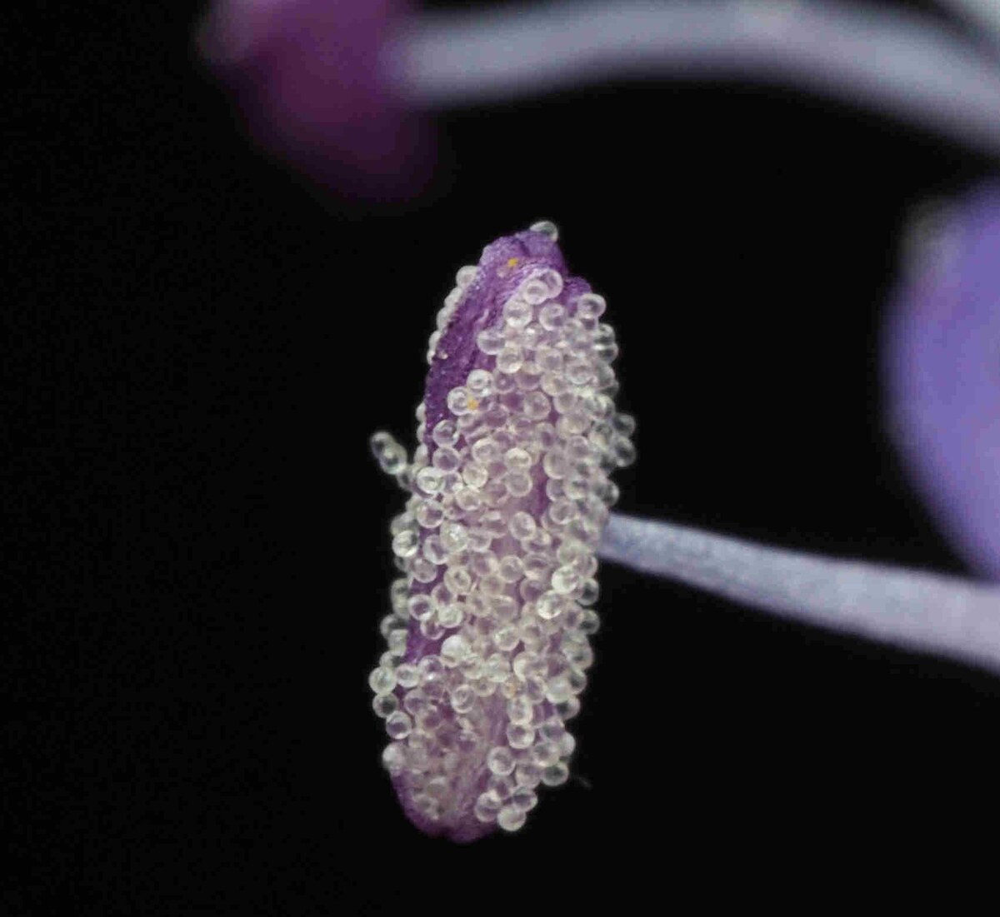
in the anthers

to another flower
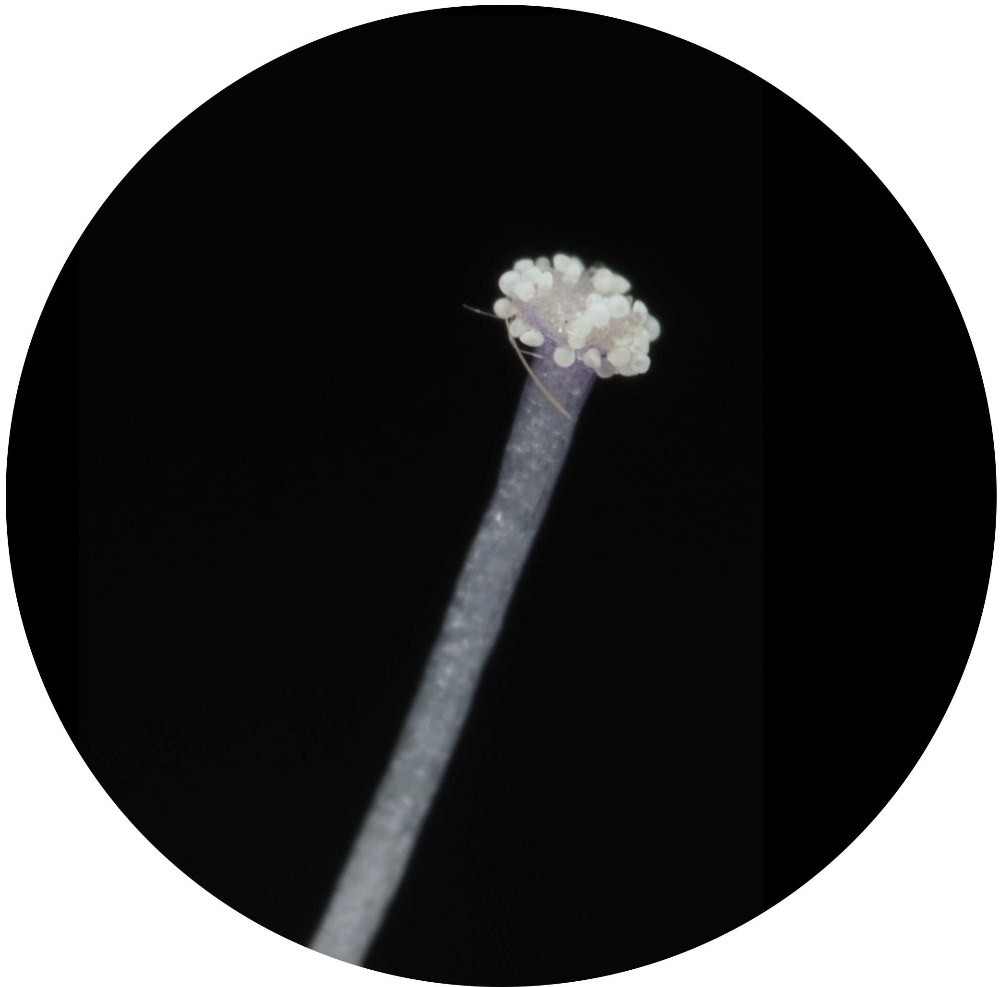
of the same species
→ fertilisation → seeds
The journey of a pollen grain
≈ 1 min
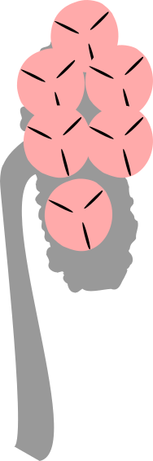
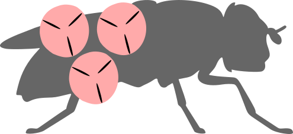
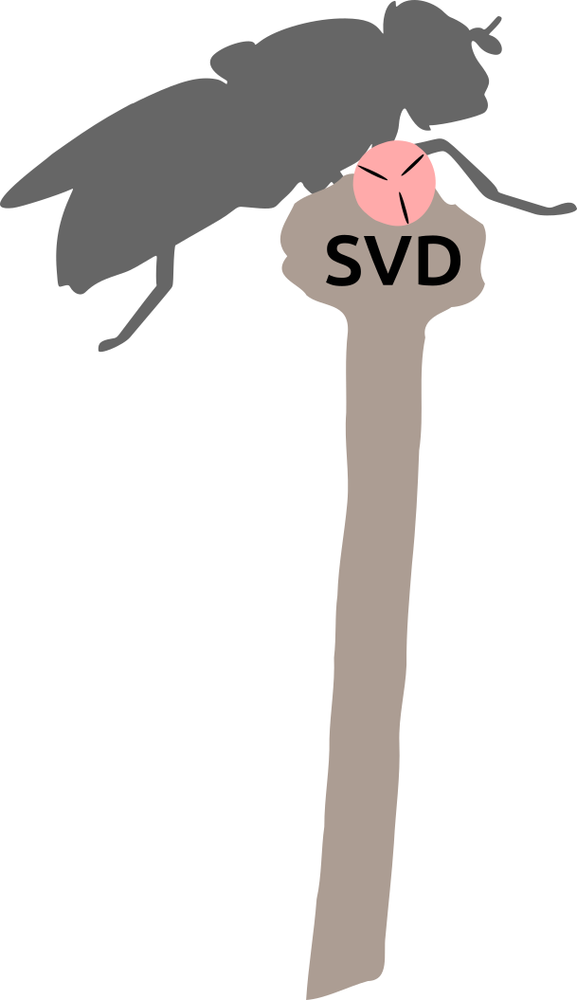

anther → pollinator
pollinator → stigma
sharing network
The system: K Handrkovu


The locality
≈ 1 min


15 years of data collection (2011–2025)
Study design: Janovský et al. (2013)
Permanent plots
≈ 1 min


Plant and pollinator survey
≈ 1.5 min


42 378 plot surveys · 68 460 interactions · 176 pollinator taxa × 55 plant species
15 years of networks
≈ 1 min

Why should timing matter?
≈ 1 min
a conspecific stigma
many couriers

the courier
Plants can’t choose visitors, but they can choose when
When is pollen available?
≈ 1.5 min

Štenc et al. (2023)
Succisa releases its pollen in the morning.
Centaurea and Trifolium peak in the early afternoon.
What do pollinators carry?
≈ 1.5 min

Štenc et al. (2025)
Focal Pollinators (Curves)
- Succisa: early hoverflies carry highest loads; pollen availability & purity drop by noon
- Centaurea & Trifolium: honeybees provide sustained conspecific transport into afternoon
- Stratified timing lowers reproductive interference between plant species
From body to stigma
≈ 1 min
>
One visit is a lottery
≈ 1.5 min
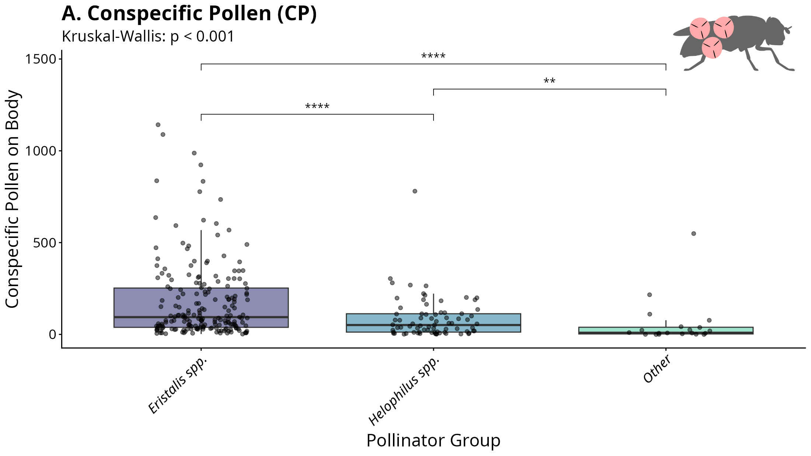
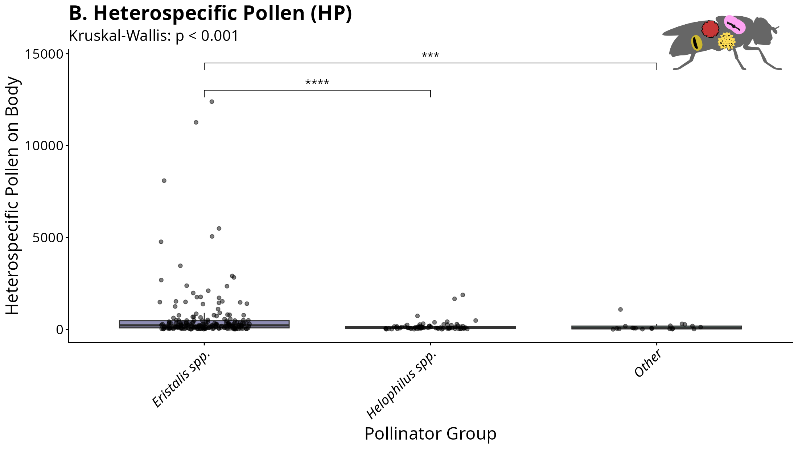
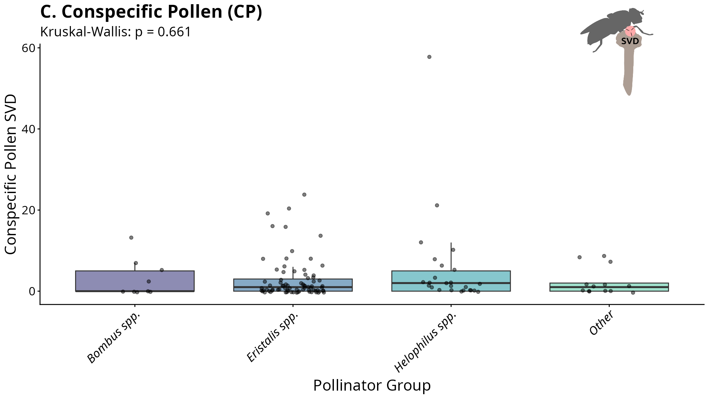
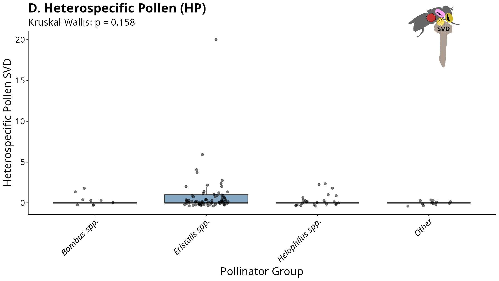

One visit leaves only ≈ 2 % of the body’s own pollen on the stigma · no difference among Eristalis, Helophilus and Bombus
But the final load is stable
≈ 1.5 min
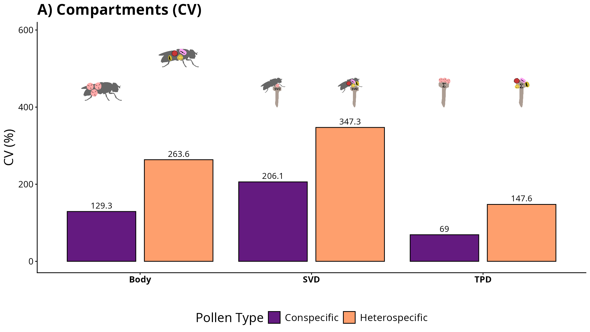
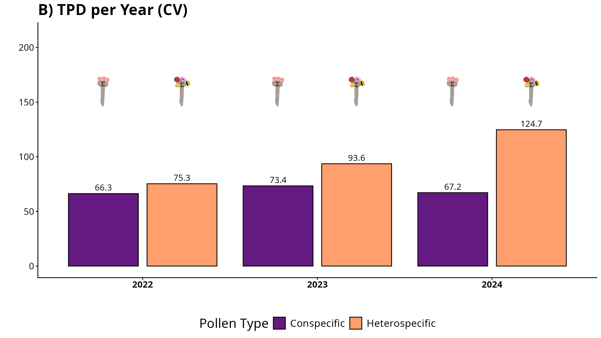
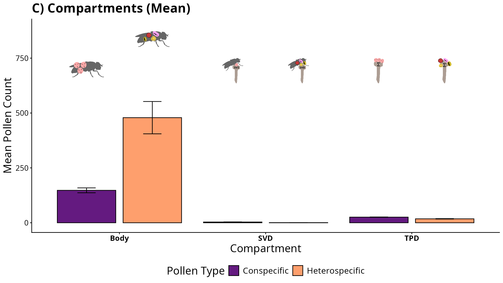
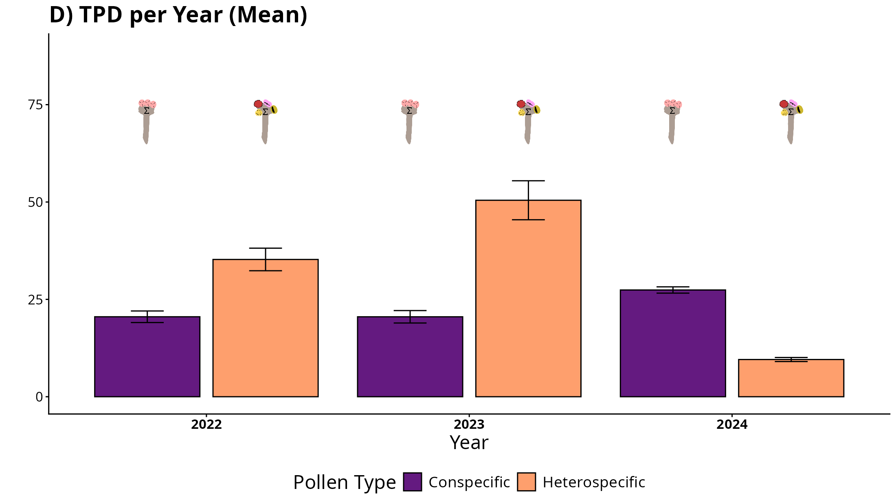

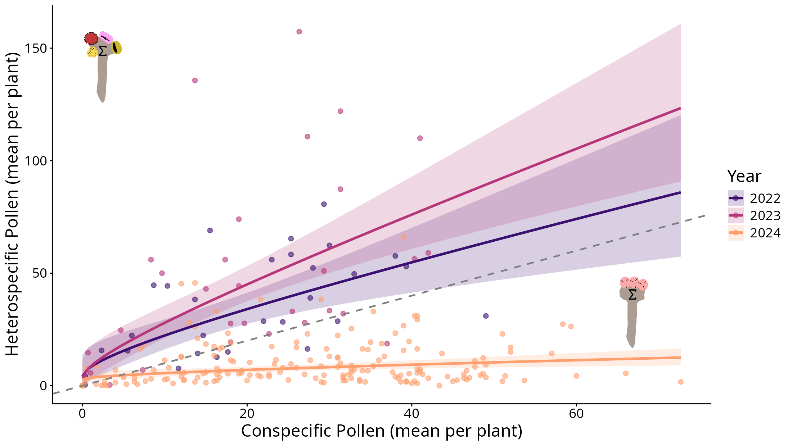
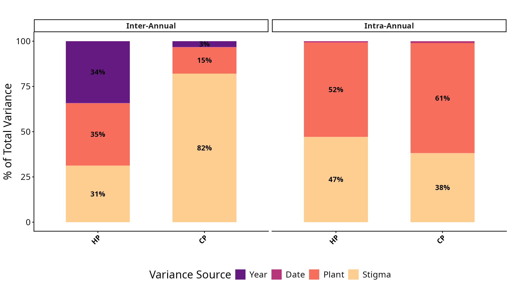

The law of large numbers
≈ 1.5 min


Plants linked by shared pollinators
≈ 1 min

The whole meadow splits the day
≈ 1.5 min
Part 2: three species release pollen at different times
When pollinators visit each plant species, 15 years of plot surveys
Visits are not pollen
≈ 1.5 min


Join us
Thank you for your attention!


Backup: community stability 2022–2024

Backup: Succisa abundance in space and time

Backup: deposition curves by life form


Backup: pollen on stigma and pollinator

Backup: from above

Backup: space as a niche axis

Backup: A stable core
≈ 1.5 min

Backup: Recurring summer drought
≈ 0.5 min

Data: TerraClimate (Abatzoglou et al. 2018), Handrkov locality (2011–2025)
Backup: Drought concentrates visits on the core
≈ 1.5 min


Backup: How robust is the network?
≈ 1 min


Co-extinction simulation following Memmott, Waser, and Price (2004)
Backup: A more fragile network
≈ 1.5 min

Co-extinction simulation following Memmott, Waser, and Price (2004)
Losing the core costs more in dry years and more every year
Backup: The next dry summers
≈ 0.5 min